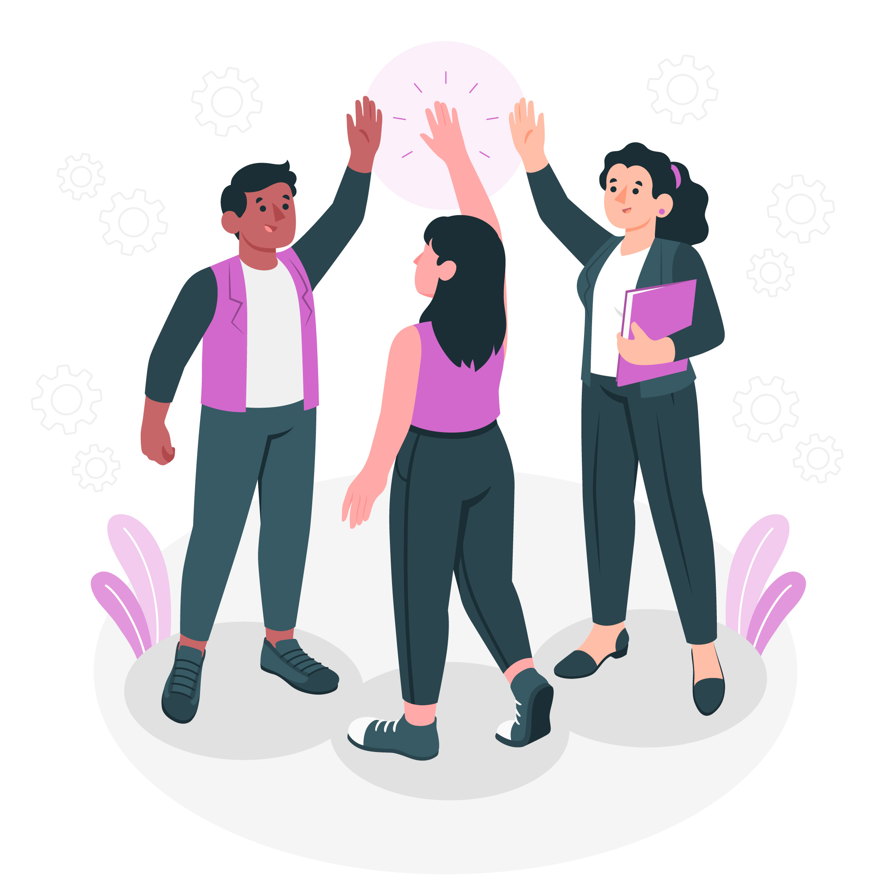

Programme Général
Introduction à l'allemand, vocabulaire de base, salutations, nombres, etc.
Séquence de Cours
- Cours 1 : Les salutations et introductions
- Cours 2 : Les nombres et couleurs
- Cours 3 : La famille et les amis
- Cours 4 : L'école et les matières
- Cours 5 : Les loisirs et le temps libre
Cours 1 : Les Salutations et Présentation
- Les Salutations
- Hallo (Bonjour)
- Guten Morgen (Bonjour)
- Guten Tag (Bonne journée)
- Guten Abend (Bonsoir)
- Tschüss (Au revoir)
- Auf Wiedersehen (Au revoir)
- Présentation
- Ich heiße ... (Je m'appelle ...)
- Wie heißt du? (Comment t'appelles-tu?)
- Wie geht's? (Comment ça va?)
- Mir geht's gut, danke. (Je vais bien, merci.)
- Jeu de rôle
- Les élèves se mettent par binôme
- Ils se saluent et se présentent
- Imaginer un dialogue d'après l'image Image de storyset sur Freepik 
- Devoirs
- Écrire cinq phrases pour se présenter en allemand.
- Pratiquer les salutations avec un membre de la famille.
Cours 2
Cours 3
Cours 4
Cours 5
Test Final
Un test final couvrant tous les sujets abordés.